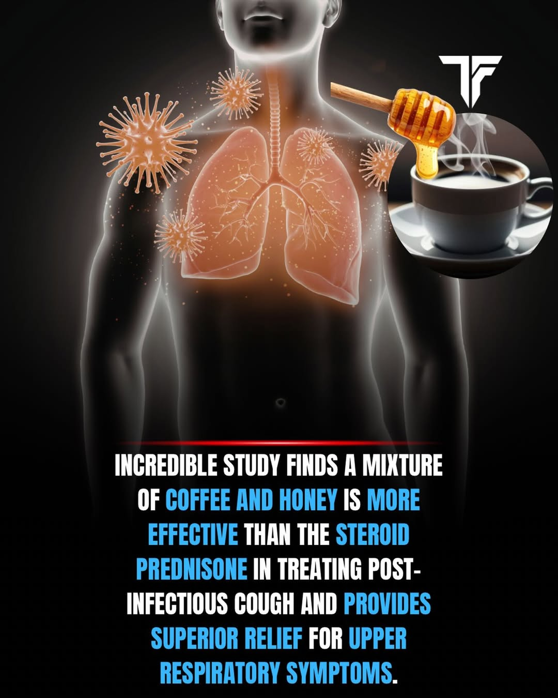

A mixture of coffee and honey is a scientifically supported, effective and natural remedy for treating persistent post-infectious cough (PPC) and associated upper respiratory distress, with some studies finding it can be even MORE effective than standard medications like the steroid prednisone.
☕️How it works:
▶️Bronchodilation (Coffee): Caffeine is a methylxanthine, a class of compounds that relax the smooth muscles of the bronchial tubes. This widening of the air passages reduces wheezing and makes breathing easier.
▶️Anti-Inflammatory Effects (Both): Both coffee and honey contain compounds with anti-inflammatory properties, reducing swelling in the throat and airways.
▶️Cough Suppression (Honey): Honey acts as a demulcent, creating a protective coating on the throat that calms irritated nerves endings, which reduces the urge to cough.
▶️Mucus Reduction (Honey): Honey helps decrease the amount of mucus the body produces and can thin it, making it easier to cough up and reducing chest congestion.
▶️Tissue Healing: The combination repairs mucosal tissue damage caused by infections, reducing the sensitivity of nerve receptors in the throat and lungs.
🍯☕️The exact recipe the study used:
▶️Combine 3/4 cup of raw, unfiltered honey with 1/2 cup of instant coffee granule (look for organic brands) until a paste forms. Mix 1 tbsp of this paste in 8 oz warm water. Drink 3 times a day for a week.
PMID: 23966217
The information shared is for informational purposes only and is not intended to be a substitute for professional medical advice, diagnosis or treatment. Always seek the advice of your physician or other qualified health provider with any questions you may have regarding a medical condition. Never disregard professional medical advice, stop a prescription regimen, start a new regimen or delay in seeking professional medical advice because of something you have read here. ❤️
